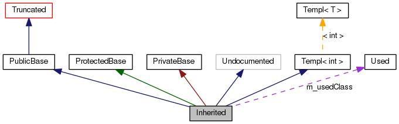

Cette page explique comment interpréter les graphes générés par doxygen.
Considérez l'exemple suivant :
1 /*! Classe invisible à cause d'une troncature */
4 /*! Classe tronquée, la relation d'héritage est masquée */
5 class Truncated : public Invisible { };
7 /*! Classe non documentée avec des commentaires Doxygen */
8 class Undocumented { };
10 /*! Classe dérivée par héritage public */
11 class PublicBase : public Truncated { };
13 /*! Un modèle de classe */
14 template<class T> class Templ { };
16 /*! Classe dérivée par héritage protégé */
17 class ProtectedBase { };
19 /*! Classe dérivée par héritage privé */
20 class PrivateBase { };
22 /*! Classe utilisée par la classe dérivée */
25 /*! Super-classe qui hérite de plusieurs autres classes */
26 class Inherited : public PublicBase,
27 protected ProtectedBase,
Cela aboutira au graphe suivant :

Les rectangles du graphe ci-dessus ont la signification suivante :
-
Un rectangle plein noir représente la structure ou la classe pour laquelle le graphe est généré.
-
Un rectangle avec un bord noir indique une classe ou une structure documentée.
-
Un rectangle avec un bord gris indique une classe ou une structure non documentée.
-
Un rectangle avec un bord rouge indique une structure ou une classe documentée pour laquelle des relations d'héritage ou de collaboration manquent. Un graphe est tronqué s'il n'entre pas dans les limites spécifiées.
Les flèches ont la signification suivante :
-
Une flèche bleu foncé est utilisée pour visualiser une relation d'héritage publique entre deux classes.
-
Une flèche vert foncé est utilisée pour une relation d'héritage protégée.
-
Une flèche rouge foncé est utilisée pour une relation d'héritage privée.
-
Une flèche violette en pointillés est utilisée si une classe est contenue ou utilisée par une autre classe. La flèche est étiquetée avec la ou les variable(s) qui permettent d'accéder à la classe ou structure pointée.
-
Une flèche jaune en pointillés indique une relation entre un modèle d'instance et le modèle de classe duquel il est instancié. La flèche est étiquetée avec les paramètres de modèle de l'instance.